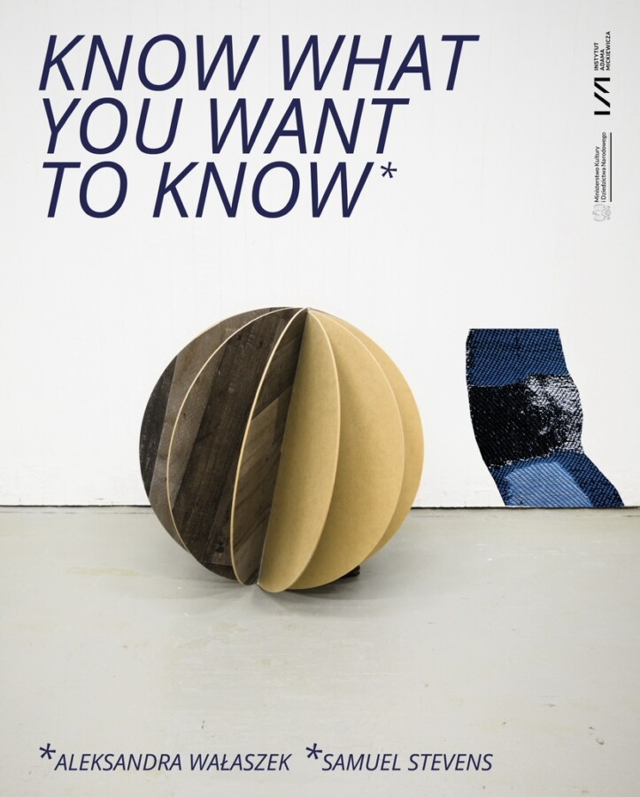

Know what you want to know
Know what you want to know
Aleksandra Wałaszek
Samuel Stevens
New works trace how accidents and external forces become part of personal realities. Landscapes and bodies mutate into algorithmic instructions – mediated or lived, aligned to shifting social logics, with reality scaled to fit. The artists ask through collage and video, weaving and carving: What is a promise never kept, an armistice of gazes, an ignored apology? The exhibition is informed by times of unrest, and unseen forces; they consider that an invitation to exit requires rehearsing the welcome again.
Aleksandra Wałaszek and Samuel Stevens met in 2017 during an art residency in Ustka, Poland, a coastal town on the Baltic Sea. What began as a chance encounter evolved into an ongoing collaboration shaped by dual belonging, and the spaces between memory and geography. Still, they move: between Poland and the U.S., between languages and landscapes, following threads of family history and political inheritance. Their work emerges from these crossings: part documentary, part excavation, refusing the notion of a singular home in favor of shared histories in-between, where identities are negotiated rather than fixed.
Their collaborative work emerges from a shared engagement with spatial vocabularies, material histories, and the interplay between permanence and transience. Through installation, sculpture, object-making, and (hi)story-(re)writing, they explore themes of belonging, displacement, and transformation.
Wałaszek received an MFA in Fiber and Material Studies from the School of the Art Institute of Chicago (2024) and an MA in Media Arts from the Eugeniusz Geppert Academy of Art and Design in Wrocław (2011). She is a recent recipient of the Fulbright Graduate Student Award, and ReSide Award. Her works have been exhibited nationally and internationally at various venues, and has participated in artist residencies. Her practice examines the coexistence of beauty and crudeness, hospitality and hostility, references architecture, and sources archives.
Stevens holds an MFA in Sculpture from the Eugeniusz Geppert Academy of Fine Art and Design, Wrocław (2020) and a BFA in Painting from the Kansas City Art Institute (2016). He is the co-founder, with Wałaszek, of Forma Otwarta, an artist-run space in Oleśnica, Poland, where he curates exhibitions and collaborative projects. His practice embraces site-specificity and experimental making, weaving together elements of craft, architecture, and ephemeral encounters to reimagine our relationship to space and objects.